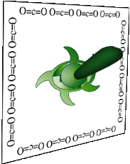
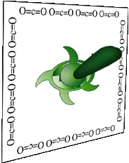

 A Switchplate for the seriosly Viridian household. Decorative CO2 borders bring back memories of the old days of coal-driven light. The switch is made out of a soft material resembling rubber. designed by joel westerberg Back to Viridian index at Unsafe

A Switchplate for the seriosly Viridian household. Decorative CO2 borders bring back memories of the old days of coal-driven light. The switch is made out of a soft material resembling rubber.
designed by joel westerberg
Back to Viridian index at Unsafe